Chapter 38: The Musculoskeletal System¶
Introduction¶
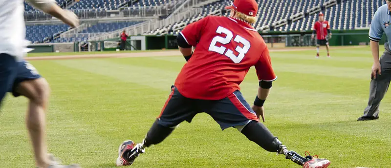
The muscular and skeletal systems provide support to the body and allow for a wide range of movement. The bones of the skeletal system protect the body’s internal organs and support the weight of the body. The muscles of the muscular system contract and pull on the bones, allowing for movements as diverse as standing, walking, running, and grasping items.
Injury or disease affecting the musculoskeletal system can be very debilitating. In humans, the most common musculoskeletal diseases worldwide are caused by malnutrition. Ailments that affect the joints are also widespread, such as arthritis, which can make movement difficult and—in advanced cases—completely impair mobility. In severe cases in which the joint has suffered extensive damage, joint replacement surgery may be needed.
Progress in the science of prosthesis design has resulted in the development of artificial joints, with joint replacement surgery in the hips and knees being the most common. Replacement joints for shoulders, elbows, and fingers are also available. Even with this progress, there is still room for improvement in the design of prostheses. The state-of-the-art prostheses have limited durability and therefore wear out quickly, particularly in young or active individuals. Current research is focused on the use of new materials, such as carbon fiber, that may make prostheses more durable.
38.1 Types of Skeletal Systems¶
Learning Objectives
By the end of this section, you will be able to do the following:
- Discuss the different types of skeletal systems
- Explain the role of the human skeletal system
- Compare and contrast different skeletal systems
A skeletal system is necessary to support the body, protect internal organs, and allow for the movement of an organism. There are three different skeleton designs that fulfill these functions: hydrostatic skeleton, exoskeleton, and endoskeleton.
Hydrostatic Skeleton¶
A hydrostatic skeleton is a skeleton formed by a fluid-filled compartment within the body, called the coelom. The organs of the coelom are supported by the aqueous fluid, which also resists external compression. This compartment is under hydrostatic pressure because of the fluid and supports the other organs of the organism. This type of skeletal system is found in soft-bodied animals such as sea anemones, earthworms, Cnidaria, and other invertebrates (Figure 38.2).
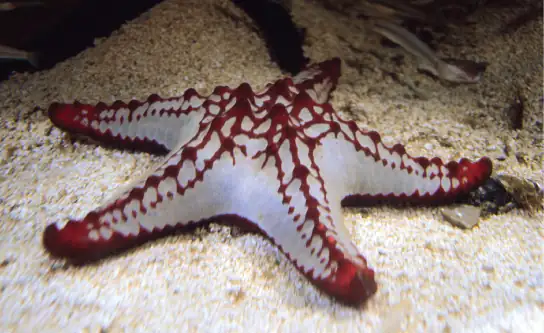
Movement in a hydrostatic skeleton is provided by muscles that surround the coelom. The muscles in a hydrostatic skeleton contract to change the shape of the coelom; the pressure of the fluid in the coelom produces movement. For example, earthworms move by waves of muscular contractions of the skeletal muscle of the body wall hydrostatic skeleton, called peristalsis, which alternately shorten and lengthen the body. Lengthening the body extends the anterior end of the organism. Most organisms have a mechanism to fix themselves in the substrate. Shortening the muscles then draws the posterior portion of the body forward. Although a hydrostatic skeleton is well-suited to invertebrate organisms such as earthworms and some aquatic organisms, it is not an efficient skeleton for terrestrial animals.
Exoskeleton¶
An exoskeleton is an external skeleton that consists of a hard encasement on the surface of an organism. For example, the shells of crabs and insects are exoskeletons (Figure 38.3). This skeleton type provides defence against predators, supports the body, and allows for movement through the contraction of attached muscles. As with vertebrates, muscles must cross a joint inside the exoskeleton. Shortening of the muscle changes the relationship of the two segments of the exoskeleton. Arthropods such as crabs and lobsters have exoskeletons that consist of 30–50 percent chitin, a polysaccharide derivative of glucose that is a strong but flexible material. Chitin is secreted by the epidermal cells. The exoskeleton is further strengthened by the addition of calcium carbonate in organisms such as the lobster. Because the exoskeleton is acellular, arthropods must periodically shed their exoskeletons because the exoskeleton does not grow as the organism grows.
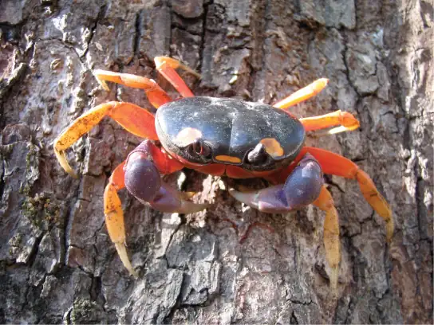
Endoskeleton¶
An endoskeleton is a skeleton that consists of hard, mineralized structures located within the soft tissue of organisms. An example of a primitive endoskeletal structure is the spicules of sponges. The bones of vertebrates are composed of tissues, whereas sponges have no true tissues (Figure 38.4). Endoskeletons provide support for the body, protect internal organs, and allow for movement through contraction of muscles attached to the skeleton.
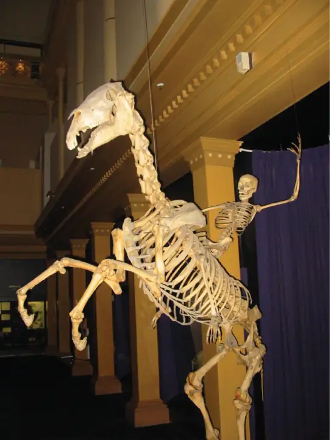
The human skeleton is an endoskeleton that consists of 206 bones in the adult. It has five main functions: providing support to the body, storing minerals and lipids, producing blood cells, protecting internal organs, and allowing for movement. The skeletal system in vertebrates is divided into the axial skeleton (which consists of the skull, vertebral column, and rib cage), and the appendicular skeleton (which consists of the shoulders, limb bones, the pectoral girdle, and the pelvic girdle).
Human Axial Skeleton¶
The axial skeleton forms the central axis of the body and includes the bones of the skull, ossicles of the middle ear, hyoid bone of the throat, vertebral column, and the thoracic cage (ribcage) (Figure 38.5). The function of the axial skeleton is to provide support and protection for the brain, the spinal cord, and the organs in the ventral body cavity. It provides a surface for the attachment of muscles that move the head, neck, and trunk, performs respiratory movements, and stabilizes parts of the appendicular skeleton.
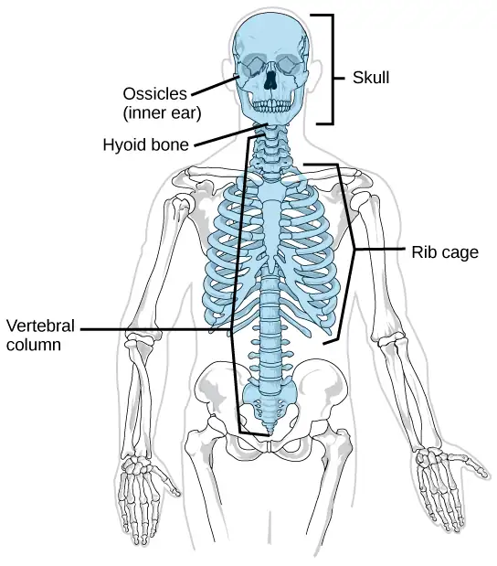
The Skull¶
The bones of the skull support the structures of the face and protect the brain. The skull consists of 22 bones, which are divided into two categories: cranial bones and facial bones. The cranial bones are eight bones that form the cranial cavity, which encloses the brain and serves as an attachment site for the muscles of the head and neck. The eight cranial bones are the frontal bone, two parietal bones, two temporal bones, occipital bone, sphenoid bone, and the ethmoid bone. Although the bones developed separately in the embryo and fetus, in the adult, they are tightly fused with connective tissue and adjoining bones do not move (Figure 38.6).
![The bones of the skull are shown from the side. The mandible is the lower jaw bone. The maxilla is superior to the mandible, comprising the upper lip and side of the nasal region. The nasal bone is anterior. The lacrimal is on the inside of the eye socket. The ethmoid is posterior to the lacrimal. The frontal bone is large, and takes up the forehead region. The zygomatic, or cheekbone, is lateral to the eye socket. The sphenoid is just behind the zygomatic. The temporal bone makes up much of the side of the skull. The parietal is large, taking up much of the top and rear portions of the skull. The occipital bone makes up the lower back of the skull.](img/figure-38-01-05.webp)
The auditory ossicles of the middle ear transmit sounds from the air as vibrations to the fluid-filled cochlea. The auditory ossicles consist of three bones each: the malleus, incus, and stapes. These are the smallest bones in the body and are unique to mammals.
Fourteen facial bones form the face, provide cavities for the sense organs (eyes, mouth, and nose), protect the entrances to the digestive and respiratory tracts, and serve as attachment points for facial muscles. The 14 facial bones are the nasal bones, the maxillary bones, zygomatic bones, palatine, vomer, lacrimal bones, the inferior nasal conchae, and the mandible. All of these bones occur in pairs except for the mandible and the vomer (Figure 38.7).
![Illustration shows a front-end view of a skull. The frontal bone is the prominent bone that makes up most of the top of the skull. The parietal bones and sphenoid bone make up the side of the skull. Two nasal bones make up the bridge of the nose. The zygomatic bone is the cheek bone. The vomer is a single bone in the middle of the nose. The maxilla makes up the upper jaw, and the mandible is the lower jaw. The lacrimal is a bone on the inner center of the eye. The nasal conchae are bones inside the nose.](img/figure-38-01-06.webp)
Although it is not found in the skull, the hyoid bone is considered a component of the axial skeleton. The hyoid bone lies below the mandible in the front of the neck. It acts as a movable base for the tongue and is connected to muscles of the jaw, larynx, and tongue. The mandible articulates with the base of the skull. The mandible controls the opening to the airway and gut. In animals with teeth, the mandible brings the surfaces of the teeth in contact with the maxillary teeth.
The Vertebral Column¶
The vertebral column, or spinal column, surrounds and protects the spinal cord, supports the head, and acts as an attachment point for the ribs and muscles of the back and neck. The adult vertebral column comprises 26 bones: the 24 vertebrae, the sacrum, and the coccyx bones. In the adult, the sacrum is typically composed of five vertebrae that fuse into one. The coccyx is typically 3–4 vertebrae that fuse into one. Around the age of 70, the sacrum and the coccyx may fuse together. We begin life with approximately 33 vertebrae, but as we grow, several vertebrae fuse together. The adult vertebrae are further divided into the 7 cervical vertebrae, 12 thoracic vertebrae, and 5 lumbar vertebrae (Figure 38.8).
![Illustration A shows all the vertebrae in a vertebral column. Illustration B shows that different sections of vertebrae curve in different directions. The cervical vertebrae in the neck curve toward the front of the body. The top cervical vertebrae is called the atlas, or c 1. The next bone down is the c 2, or axis. There are 7 cerebral vertebrae. Next are the thoracic vertebrae, which extend from the neck to the bottom of the rib cage, curve toward the back of the body. These are labeled as T h 1, which is the first thoracic vertebrae below the cervicals, to t h 12, which is the lowest of the thoracic vertebrae. Next are the lumbar vertebrae, which extend to the bottom of the back, curve toward the front again. These lumbar vertebrae are labeled L 1, which is the next vertebrae below the thoracics, thorugh L 5, which is the lowest lumbar vertebrae. The sacrum and the coccygeal vertebrae make up the sacral curve that curves toward the back. The sacrum is above the coccyx.](img/figure-b38-01-07ab.webp)
Each vertebral body has a large hole in the center through which the nerves of the spinal cord pass. There is also a notch on each side through which the spinal nerves, which serve the body at that level, can exit from the spinal cord. The vertebral column is approximately 71 cm (28 inches) in adult male humans and is curved, which can be seen from a side view. The names of the spinal curves correspond to the region of the spine in which they occur. The thoracic and sacral curves are concave (curve inwards relative to the front of the body) and the cervical and lumbar curves are convex (curve outwards relative to the front of the body). The arched curvature of the vertebral column increases its strength and flexibility, allowing it to absorb shocks like a spring (Figure 38.8).
Intervertebral discs composed of fibrous cartilage lie between adjacent vertebral bodies from the second cervical vertebra to the sacrum. Each disc is part of a joint that allows for some movement of the spine and acts as a cushion to absorb shocks from movements such as walking and running. Intervertebral discs also act as ligaments to bind vertebrae together. The inner part of discs, the nucleus pulposus, hardens as people age and becomes less elastic. This loss of elasticity diminishes its ability to absorb shocks.
The Thoracic Cage¶
The thoracic cage, also known as the ribcage, is the skeleton of the chest, and consists of the ribs, sternum, thoracic vertebrae, and costal cartilages (Figure 38.9). The thoracic cage encloses and protects the organs of the thoracic cavity, including the heart and lungs. It also provides support for the shoulder girdles and upper limbs, and serves as the attachment point for the diaphragm, muscles of the back, chest, neck, and shoulders. Changes in the volume of the thorax enable breathing.
The sternum, or breastbone, is a long, flat bone located at the anterior of the chest. It is formed from three bones that fuse in the adult. The ribs are 12 pairs of long, curved bones that attach to the thoracic vertebrae and curve toward the front of the body, forming the ribcage. Costal cartilages connect the anterior ends of the ribs to the sternum, with the exception of rib pairs 11 and 12, which are free-floating ribs.
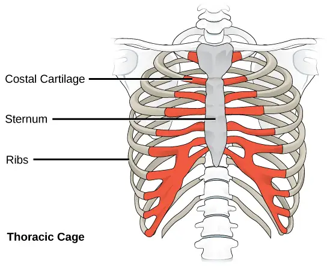
Human Appendicular Skeleton¶
The appendicular skeleton is composed of the bones of the upper limbs (which function to grasp and manipulate objects) and the lower limbs (which permit locomotion). It also includes the pectoral girdle, or shoulder girdle, that attaches the upper limbs to the body, and the pelvic girdle that attaches the lower limbs to the body (Figure 38.10).
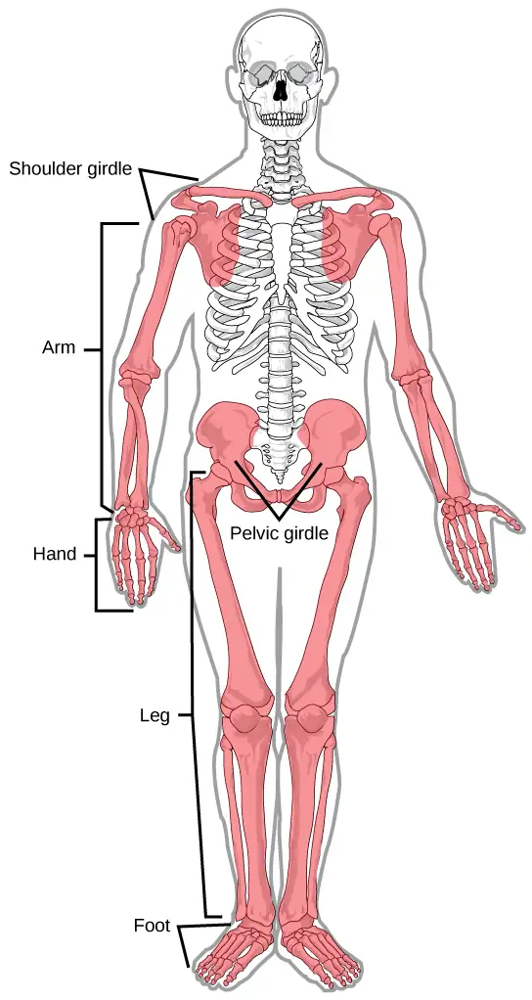
The Pectoral Girdle¶
The pectoral girdle bones provide the points of attachment of the upper limbs to the axial skeleton. The human pectoral girdle consists of the clavicle (or collarbone) in the anterior, and the scapula (or shoulder blades) in the posterior (Figure 38.11).
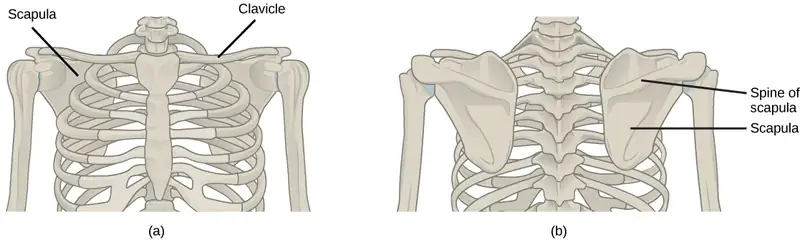
The clavicles are S-shaped bones that position the arms on the body. The clavicles lie horizontally across the front of the thorax (chest) just above the first rib. These bones are fairly fragile and are susceptible to fractures. For example, a fall with the arms outstretched causes the force to be transmitted to the clavicles, which can break if the force is excessive. The clavicle articulates with the sternum and the scapula.
The scapulae are flat, triangular bones that are located at the back of the pectoral girdle. They support the muscles crossing the shoulder joint. A ridge, called the spine, runs across the back of the scapula and can easily be felt through the skin (Figure 38.11). The spine of the scapula is a good example of a bony protrusion that facilitates a broad area of attachment for muscles to bone.
The Upper Limb¶
The upper limb contains 30 bones in three regions: the arm (shoulder to elbow), the forearm (ulna and radius), and the wrist and hand (Figure 38.12).
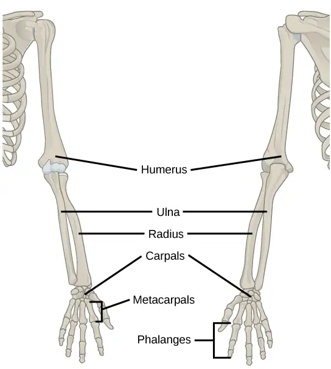
An articulation is any place at which two bones are joined. The humerus is the largest and longest bone of the upper limb and the only bone of the arm. It articulates with the scapula at the shoulder and with the forearm at the elbow. The forearm extends from the elbow to the wrist and consists of two bones: the ulna and the radius. The radius is located along the lateral (thumb) side of the forearm and articulates with the humerus at the elbow. The ulna is located on the medial aspect (pinky-finger side) of the forearm. It is longer than the radius. The ulna articulates with the humerus at the elbow. The radius and ulna also articulate with the carpal bones and with each other, which in vertebrates enables a variable degree of rotation of the carpus with respect to the long axis of the limb. The hand includes the eight bones of the carpus (wrist), the five bones of the metacarpus (palm), and the 14 bones of the phalanges (digits). Each digit consists of three phalanges, except for the thumb, when present, which has only two.
The Pelvic Girdle¶
The pelvic girdle bones provide the points of attachment of the lower limbs to the axial skeleton. Because it is responsible for bearing the weight of the body and for locomotion, the pelvic girdle is securely attached to the axial skeleton by strong ligaments. It also has deep sockets with robust ligaments to securely attach the femur to the body. The pelvic girdle is further strengthened by two large hip bones. In adults, the hip bones, or coxal bones, are formed by the fusion of three pairs of bones: the ilium, ischium, and pubis. The pelvis joins together in the anterior of the body at a joint called the pubic symphysis and with the bones of the sacrum at the posterior of the body.
The female pelvis is slightly different from the male pelvis. Over generations of evolution, females with a wider pubic angle and larger diameter pelvic canal reproduced more successfully. Therefore, their offspring also had pelvic anatomy that enabled successful childbirth (Figure 38.13).
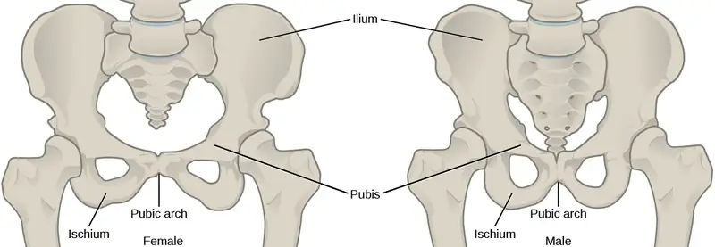
The Lower Limb¶
The lower limb consists of the thigh, the leg, and the foot. The bones of the lower limb are the femur (thigh bone), patella (kneecap), tibia and fibula (bones of the leg), tarsals (bones of the ankle), and metatarsals and phalanges (bones of the foot) (Figure 38.14). The bones of the lower limbs are thicker and stronger than the bones of the upper limbs because of the need to support the entire weight of the body and the resulting forces from locomotion. In addition to evolutionary fitness, the bones of an individual will respond to forces exerted upon them.
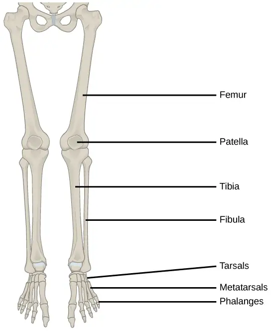
The femur, or thighbone, is the longest, heaviest, and strongest bone in the body. The femur and pelvis form the hip joint at the proximal end. At the distal end, the femur, tibia, and patella form the knee joint. The patella, or kneecap, is a triangular bone that lies anterior to the knee joint. The patella is embedded in the tendon of the femoral extensors (quadriceps). It improves knee extension by reducing friction. The tibia, or shinbone, is a large bone of the leg that is located directly below the knee. The tibia articulates with the femur at its proximal end, with the fibula and the tarsal bones at its distal end. It is the second largest bone in the human body and is responsible for transmitting the weight of the body from the femur to the foot. The fibula, or calf bone, parallels and articulates with the tibia. It does not articulate with the femur and does not bear weight. The fibula acts as a site for muscle attachment and forms the lateral part of the ankle joint.
The tarsals are the seven bones of the ankle. The ankle transmits the weight of the body from the tibia and the fibula to the foot. The metatarsals are the five bones of the foot. The phalanges are the 14 bones of the toes. Each toe consists of three phalanges, except for the big toe that has only two (Figure 38.15). Variations exist in other species; for example, the horse’s metacarpals and metatarsals are oriented vertically and do not make contact with the substrate.
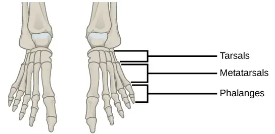
Evolution Connection: Evolution of Body Design for Locomotion on Land
The transition of vertebrates onto land required a number of changes in body design, as movement on land presents a number of challenges for animals that are adapted to movement in water. The buoyancy of water provides a certain amount of lift, and a common form of movement by fish is lateral undulations of the entire body. This back and forth movement pushes the body against the water, creating forward movement. In most fish, the muscles of paired fins attach to girdles within the body, allowing for some control of locomotion. As certain fish began moving onto land, they retained their lateral undulation form of locomotion (anguilliform). However, instead of pushing against water, their fins or flippers became points of contact with the ground, around which they rotated their bodies.
The effect of gravity and the lack of buoyancy on land meant that body weight was suspended on the limbs, leading to increased strengthening and ossification of the limbs. The effect of gravity also required changes to the axial skeleton. Lateral undulations of land animal vertebral columns cause torsional strain. A firmer, more ossified vertebral column became common in terrestrial tetrapods because it reduces strain while providing the strength needed to support the body’s weight. In later tetrapods, the vertebrae began allowing for vertical motion rather than lateral flexion. Another change in the axial skeleton was the loss of a direct attachment between the pectoral girdle and the head. This reduced the jarring to the head caused by the impact of the limbs on the ground. The vertebrae of the neck also evolved to allow movement of the head independently of the body.
The appendicular skeleton of land animals is also different from aquatic animals. The shoulders attach to the pectoral girdle through muscles and connective tissue, thus reducing the jarring of the skull. Because of a lateral undulating vertebral column, in early tetrapods, the limbs were splayed out to the side and movement occurred by performing “push-ups.” The vertebrae of these animals had to move side-to-side in a similar manner to fish and reptiles. This type of motion requires large muscles to move the limbs toward the midline; it was almost like walking while doing push-ups, and it is not an efficient use of energy. Later tetrapods have their limbs placed under their bodies, so that each stride requires less force to move forward. This resulted in decreased adductor muscle size and an increased range of motion of the scapulae. This also restricts movement primarily to one plane, creating forward motion rather than moving the limbs upward as well as forward. The femur and humerus were also rotated, so that the ends of the limbs and digits were pointed forward, in the direction of motion, rather than out to the side. By placement underneath the body, limbs can swing forward like a pendulum to produce a stride that is more efficient for moving over land.
38.2 Bone¶
Learning Objectives
By the end of this section, you will be able to do the following:
- Classify the different types of bones in the skeleton
- Explain the role of the different cell types in bone
- Explain how bone forms during development
Bone, or osseous tissue, is a connective tissue that constitutes the endoskeleton. It contains specialized cells and a matrix of mineral salts and collagen fibers.
The mineral salts primarily include hydroxyapatite, a mineral formed from calcium phosphate. Calcification is the process of deposition of mineral salts on the collagen fiber matrix that crystallizes and hardens the tissue. The process of calcification only occurs in the presence of collagen fibers.
The bones of the human skeleton are classified by their shape: long bones, short bones, flat bones, sutural bones, sesamoid bones, and irregular bones (Figure 38.16).
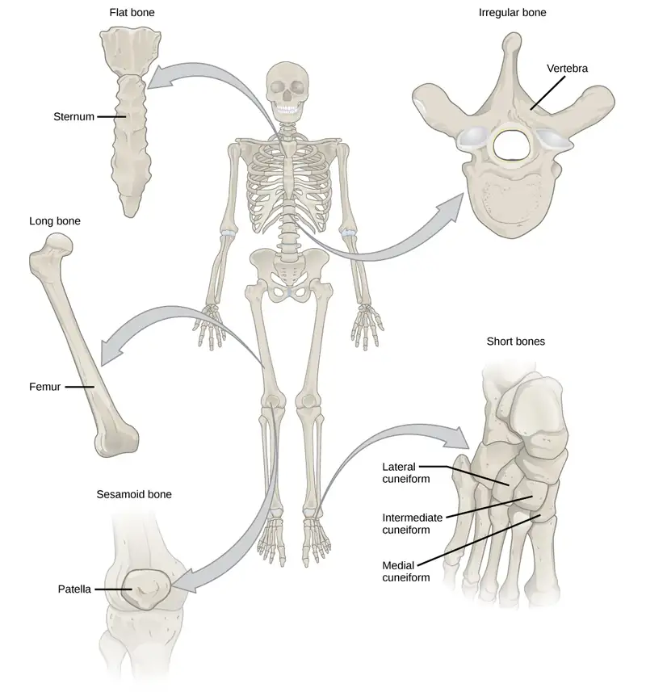
Long bones are longer than they are wide and have a shaft and two ends. The diaphysis, or central shaft, contains bone marrow in a medullary (marrow) cavity. The rounded ends, the epiphyses, are covered with articular cartilage and are filled with red bone marrow, which produces blood cells (Figure 38.17). Most of the limb bones are long bones—for example, the femur, tibia, ulna, and radius. Exceptions to this include the patella and the bones of the wrist and ankle.
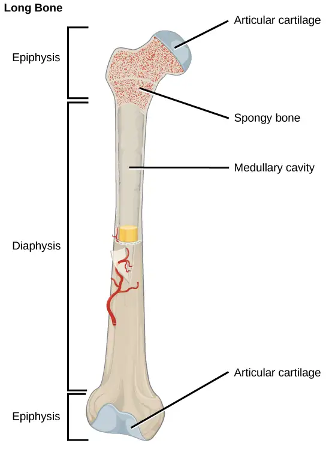
Short bones, or cuboidal bones, are bones that are the same width and length, giving them a cube-like shape. For example, the bones of the wrist (carpals) and ankle (tarsals) are short bones (Figure 38.16).
Flat bones are thin and relatively broad bones that are found where extensive protection of organs is required or where broad surfaces of muscle attachment are required. Examples of flat bones are the sternum (breast bone), ribs, scapulae (shoulder blades), and the roof of the skull (Figure 38.16).
Irregular bones are bones with complex shapes. These bones may have short, flat, notched, or ridged surfaces. Examples of irregular bones are the vertebrae, hip bones, and several skull bones.
Sesamoid bones are small, flat bones and are shaped similarly to a sesame seed. The patellae are sesamoid bones (Figure 38.18). Sesamoid bones develop inside tendons and may be found near joints at the knees, hands, and feet.
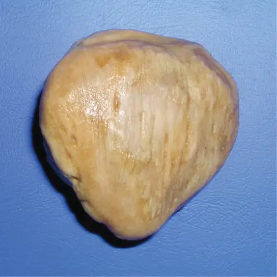
Sutural bones are small, flat, irregularly shaped bones. They may be found between the flat bones of the skull. They vary in number, shape, size, and position.
Bone Tissue¶
Bones are considered organs because they contain various types of tissue, such as blood, connective tissue, nerves, and bone tissue. Osteocytes, the living cells of bone tissue, form the mineral matrix of bones. There are two types of bone tissue: compact and spongy.
Compact Bone Tissue¶
Compact bone (or cortical bone) forms the hard external layer of all bones and surrounds the medullary cavity, or bone marrow. It provides protection and strength to bones. Compact bone tissue consists of units called osteons or Haversian systems. Osteons are cylindrical structures that contain a mineral matrix and living osteocytes connected by canaliculi, which transport blood. They are aligned parallel to the long axis of the bone. Each osteon consists of lamellae, which are layers of compact matrix that surround a central canal called the Haversian canal. The Haversian canal (osteonic canal) contains the bone’s blood vessels and nerve fibers (Figure 38.19). Osteons in compact bone tissue are aligned in the same direction along lines of stress and help the bone resist bending or fracturing. Therefore, compact bone tissue is prominent in areas of bone at which stresses are applied in only a few directions.
Visual Connection
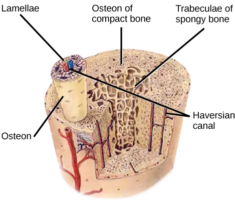
Which of the following statements about bone tissue is false?
- Compact bone tissue is made of cylindrical osteons that are aligned such that they travel the length of the bone.
- Haversian canals contain blood vessels only.
- Haversian canals contain blood vessels and nerve fibers.
- Spongy tissue is found on the interior of the bone, and compact bone tissue is found on the exterior.
Spongy Bone Tissue¶
Whereas compact bone tissue forms the outer layer of all bones, spongy bone or cancellous bone forms the inner layer of all bones. Spongy bone tissue does not contain osteons that constitute compact bone tissue. Instead, it consists of trabeculae, which are lamellae that are arranged as rods or plates. Red bone marrow is found between the trabeculae. Blood vessels within this tissue deliver nutrients to osteocytes and remove waste. The red bone marrow of the femur and the interior of other large bones, such as the ilium, forms blood cells.
Spongy bone reduces the density of bone and allows the ends of long bones to compress as the result of stresses applied to the bone. Spongy bone is prominent in areas of bones that are not heavily stressed or where stresses arrive from many directions. The epiphyses of bones, such as the neck of the femur, are subject to stress from many directions. Imagine laying a heavy framed picture flat on the floor. You could hold up one side of the picture with a toothpick if the toothpick was perpendicular to the floor and the picture. Now drill a hole and stick the toothpick into the wall to hang up the picture. In this case, the function of the toothpick is to transmit the downward pressure of the picture to the wall. The force on the picture is straight down to the floor, but the force on the toothpick is both the picture wire pulling down and the bottom of the hole in the wall pushing up. The toothpick will break off right at the wall.
The neck of the femur is horizontal like the toothpick in the wall. The weight of the body pushes it down near the joint, but the vertical diaphysis of the femur pushes it up at the other end. The neck of the femur must be strong enough to transfer the downward force of the body weight horizontally to the vertical shaft of the femur (Figure 38.20).
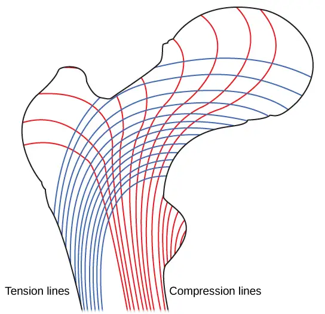
Interactive
View micrographs of musculoskeletal tissues as you review the anatomy.
Cell Types in Bones¶
Bone consists of four types of cells: osteoblasts, osteoclasts, osteocytes, and osteoprogenitor cells. Osteoblasts are bone cells that are responsible for bone formation. Osteoblasts synthesize and secrete the organic part and inorganic part of the extracellular matrix of bone tissue, and collagen fibers. Osteoblasts become trapped in these secretions and differentiate into less active osteocytes. Osteoclasts are large bone cells with up to 50 nuclei. They remove bone structure by releasing lysosomal enzymes and acids that dissolve the bony matrix. These minerals, released from bones into the blood, help regulate calcium concentrations in body fluids. Bone may also be resorbed for remodeling, if the applied stresses have changed. Osteocytes are mature bone cells and are the main cells in bony connective tissue; these cells cannot divide. Osteocytes maintain normal bone structure by recycling the mineral salts in the bony matrix. Osteoprogenitor cells are squamous stem cells that divide to produce daughter cells that differentiate into osteoblasts. Osteoprogenitor cells are important in the repair of fractures.
Development of Bone¶
Ossification, or osteogenesis, is the process of bone formation by osteoblasts. Ossification is distinct from the process of calcification; whereas calcification takes place during the ossification of bones, it can also occur in other tissues. Ossification begins approximately six weeks after fertilization in an embryo. Before this time, the embryonic skeleton consists entirely of fibrous membranes and hyaline cartilage. The development of bone from fibrous membranes is called intramembranous ossification; development from hyaline cartilage is called endochondral ossification. Bone growth continues until approximately age 25. Bones can grow in thickness throughout life, but after age 25, ossification functions primarily in bone remodeling and repair.
Intramembranous Ossification¶
Intramembranous ossification is the process of bone development from fibrous membranes. It is involved in the formation of the flat bones of the skull, the mandible, and the clavicles. Ossification begins as mesenchymal cells form a template of the future bone. They then differentiate into osteoblasts at the ossification center. Osteoblasts secrete the extracellular matrix and deposit calcium, which hardens the matrix. The non-mineralized portion of the bone or osteoid continues to form around blood vessels, forming spongy bone. Connective tissue in the matrix differentiates into red bone marrow in the fetus. The spongy bone is remodeled into a thin layer of compact bone on the surface of the spongy bone.
Endochondral Ossification¶
Endochondral ossification is the process of bone development from hyaline cartilage. All of the bones of the body, except for the flat bones of the skull, mandible, and clavicles, are formed through endochondral ossification.
In long bones, chondrocytes form a template of the hyaline cartilage diaphysis. Responding to complex developmental signals, the matrix begins to calcify. This calcification prevents diffusion of nutrients into the matrix, resulting in chondrocytes dying and the opening up of cavities in the diaphysis cartilage. Blood vessels invade the cavities, and osteoblasts and osteoclasts modify the calcified cartilage matrix into spongy bone. Osteoclasts then break down some of the spongy bone to create a medullary, or marrow, cavity in the center of the diaphysis. Dense, irregular connective tissue forms a sheath (periosteum) around the bones. The periosteum assists in attaching the bone to surrounding tissues, tendons, and ligaments. The bone continues to grow and elongate as the cartilage cells at the epiphyses divide.
In the last stage of prenatal bone development, the centers of the epiphyses begin to calcify. Secondary ossification centers form in the epiphyses as blood vessels and osteoblasts enter these areas and convert hyaline cartilage into spongy bone. Until adolescence, hyaline cartilage persists at the epiphyseal plate (growth plate), which is the region between the diaphysis and epiphysis that is responsible for the lengthwise growth of long bones (Figure 38.21).
![Illustration shows bone growth, which begins with a hyaline cartilage model that has the appearance of a small bone. A primary ossification center forms in the center of the narrow part of the bone, and a bone collar forms around the outside. The periosteum forms around the outside of the bone. Next, blood vessels begin to form in the bone and secondary ossification centers form in the epiphyses. The primary ossification center hollows out to form the medullary cavity, and an epiphyseal plate grows, separating the epiphyses from the diaphysis.](img/figure-38-02-06.webp)
Growth of Bone¶
Long bones continue to lengthen, potentially until adolescence, through the addition of bone tissue at the epiphyseal plate. They also increase in width through appositional growth.
Lengthening of Long Bones¶
Chondrocytes on the epiphyseal side of the epiphyseal plate divide; one cell remains undifferentiated near the epiphysis, and one cell moves toward the diaphysis. The cells, which are pushed from the epiphysis, mature and are destroyed by calcification. This process replaces cartilage with bone on the diaphyseal side of the plate, resulting in a lengthening of the bone.
Long bones stop growing at around the age of 18 in females and the age of 21 in males in a process called epiphyseal plate closure. During this process, cartilage cells stop dividing and all of the cartilage is replaced by bone. The epiphyseal plate fades, leaving a structure called the epiphyseal line or epiphyseal remnant, and the epiphysis and diaphysis fuse.
Thickening of Long Bones¶
Appositional growth is the increase in the diameter of bones by the addition of bony tissue at the surface of bones. Osteoblasts at the bone surface secrete bone matrix, and osteoclasts on the inner surface break down bone. The osteoblasts differentiate into osteocytes. A balance between these two processes allows the bone to thicken without becoming too heavy.
Bone Remodeling and Repair¶
Bone renewal continues after birth into adulthood. Bone remodeling is the replacement of old bone tissue by new bone tissue. It involves the processes of bone deposition by osteoblasts and bone resorption by osteoclasts. Normal bone growth requires vitamins D, C, and A, plus minerals such as calcium, phosphorous, and magnesium. Hormones such as parathyroid hormone, growth hormone, and calcitonin are also required for proper bone growth and maintenance.
Bone turnover rates are quite high, with five to seven percent of bone mass being recycled every week. Differences in turnover rate exist in different areas of the skeleton and in different areas of a bone. For example, the bone in the head of the femur may be fully replaced every six months, whereas the bone along the shaft is altered much more slowly.
Bone remodeling allows bones to adapt to stresses by becoming thicker and stronger when subjected to stress. Bones that are not subject to normal stress, for example when a limb is in a cast, will begin to lose mass. A fractured or broken bone undergoes repair through four stages:
- Blood vessels in the broken bone tear and hemorrhage, resulting in the formation of clotted blood, or a hematoma, at the site of the break. The severed blood vessels at the broken ends of the bone are sealed by the clotting process, and bone cells that are deprived of nutrients begin to die.
- Within days of the fracture, capillaries grow into the hematoma, and phagocytic cells begin to clear away the dead cells. Though fragments of the blood clot may remain, fibroblasts and osteoblasts enter the area and begin to reform bone. Fibroblasts produce collagen fibers that connect the broken bone ends, and osteoblasts start to form spongy bone. The repair tissue between the broken bone ends is called the fibrocartilaginous callus, as it is composed of both hyaline and fibrocartilage (Figure 38.22). Some bone spicules may also appear at this point.
- The fibrocartilaginous callus is converted into a bony callus of spongy bone. It takes about two months for the broken bone ends to be firmly joined together after the fracture. This is similar to the endochondral formation of bone, as cartilage becomes ossified; osteoblasts, osteoclasts, and bone matrix are present.
- The bony callus is then remodelled by osteoclasts and osteoblasts, with excess material on the exterior of the bone and within the medullary cavity being removed. Compact bone is added to create bone tissue that is similar to the original, unbroken bone. This remodeling can take many months, and the bone may remain uneven for years.
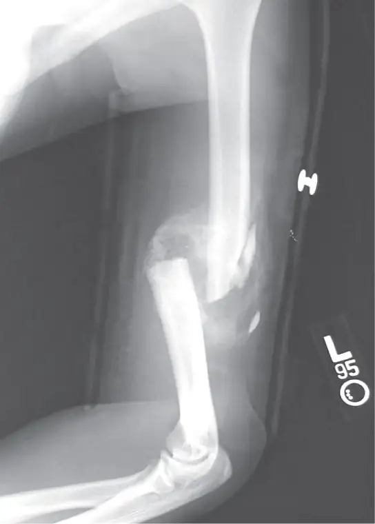
Scientific Method Connection
Decalcification of Bones
Question: What effect does the removal of calcium and collagen have on bone structure?
Background: Conduct a literature search on the role of calcium and collagen in maintaining bone structure. Conduct a literature search on diseases in which bone structure is compromised.
Hypothesis: Develop a hypothesis that states predictions of the flexibility, strength, and mass of bones that have had the calcium and collagen components removed. Develop a hypothesis regarding the attempt to add calcium back to decalcified bones.
Test the hypothesis: Test the prediction by removing calcium from chicken bones by placing them in a jar of vinegar for seven days. Test the hypothesis regarding adding calcium back to decalcified bone by placing the decalcified chicken bones into a jar of water with calcium supplements added. Test the prediction by denaturing the collagen from the bones by baking them at 250°C for three hours.
Analyze the data: Create a table showing the changes in bone flexibility, strength, and mass in the three different environments.
Report the results: Under which conditions was the bone most flexible? Under which conditions was the bone the strongest?
Draw a conclusion: Did the results support or refute the hypothesis? How do the results observed in this experiment correspond to diseases that destroy bone tissue?
38.3 Joints and Skeletal Movement¶
Learning Objectives
By the end of this section, you will be able to do the following:
- Classify the different types of joints on the basis of structure
- Explain the role of joints in skeletal movement
The point at which two or more bones meet is called a joint, or articulation. Joints are responsible for movement, such as the movement of limbs, and stability, such as the stability found in the bones of the skull.
Classification of Joints on the Basis of Structure¶
There are two ways to classify joints: on the basis of their structure or on the basis of their function. The structural classification divides joints into bony, fibrous, cartilaginous, and synovial joints depending on the material composing the joint and the presence or absence of a cavity in the joint.
Fibrous Joints¶
The bones of fibrous joints are held together by fibrous connective tissue. There is no cavity, or space, present between the bones and so most fibrous joints do not move at all, or are only capable of minor movements. There are three types of fibrous joints: sutures, syndesmoses, and gomphoses. Sutures are found only in the skull and possess short fibers of connective tissue that hold the skull bones tightly in place (Figure 38.23).
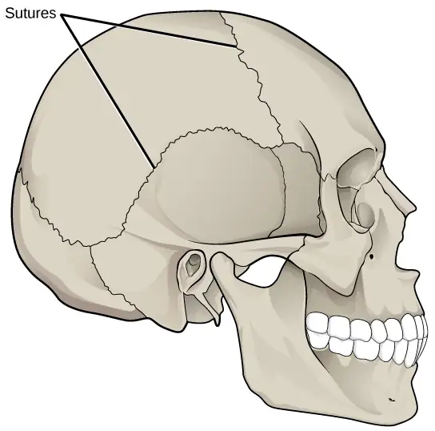
Syndesmoses are joints in which the bones are connected by a band of connective tissue, allowing for more movement than in a suture. An example of a syndesmosis is the joint of the tibia and fibula in the ankle. The amount of movement in these types of joints is determined by the length of the connective tissue fibers. Gomphoses occur between teeth and their sockets; the term refers to the way the tooth fits into the socket like a peg (Figure 38.24). The tooth is connected to the socket by a connective tissue referred to as the periodontal ligament.
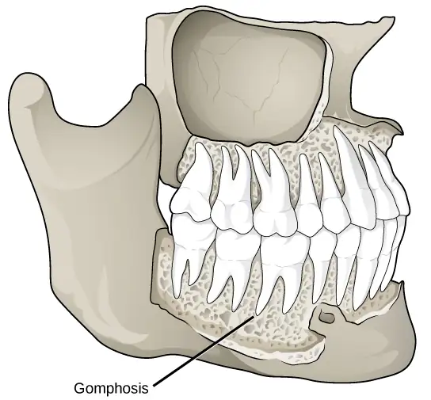
Cartilaginous Joints¶
Cartilaginous joints are joints in which the bones are connected by cartilage. There are two types of cartilaginous joints: synchondroses and symphyses. In a synchondrosis, the bones are joined by hyaline cartilage. Synchondroses are found in the epiphyseal plates of growing bones in children. In symphyses, hyaline cartilage covers the end of the bone but the connection between bones occurs through fibrocartilage. Symphyses are found at the joints between vertebrae. Either type of cartilaginous joint allows for very little movement.
Synovial Joints¶
Synovial joints are the only joints that have a space between the adjoining bones (Figure 38.25). This space is referred to as the synovial (or joint) cavity and is filled with synovial fluid. Synovial fluid lubricates the joint, reducing friction between the bones and allowing for greater movement. The ends of the bones are covered with articular cartilage, a hyaline cartilage, and the entire joint is surrounded by an articular capsule composed of connective tissue that allows movement of the joint while resisting dislocation. Articular capsules may also possess ligaments that hold the bones together. Synovial joints are capable of the greatest movement of the three structural joint types; however, the more mobile a joint, the weaker the joint. Knees, elbows, and shoulders are examples of synovial joints.
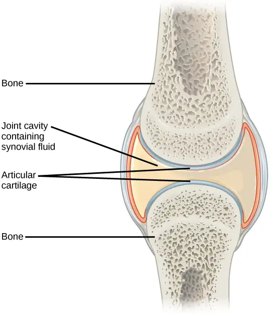
Classification of Joints on the Basis of Function¶
The functional classification divides joints into three categories: synarthroses, amphiarthroses, and diarthroses. A synarthrosis is a joint that is immovable. This includes sutures, gomphoses, and synchondroses. Amphiarthroses are joints that allow slight movement, including syndesmoses and symphyses. Diarthroses are joints that allow for free movement of the joint, as in synovial joints.
Movement at Synovial Joints¶
The wide range of movement allowed by synovial joints produces different types of movements. The movement of synovial joints can be classified as one of four different types: gliding, angular, rotational, or special movement.
Gliding Movement¶
Gliding movements occur as relatively flat bone surfaces move past each other. Gliding movements produce very little rotation or angular movement of the bones. The joints of the carpal and tarsal bones are examples of joints that produce gliding movements.
Angular Movement¶
Angular movements are produced when the angle between the bones of a joint changes. There are several different types of angular movements, including flexion, extension, hyperextension, abduction, adduction, and circumduction. Flexion, or bending, occurs when the angle between the bones decreases. Moving the forearm upward at the elbow or moving the wrist to move the hand toward the forearm are examples of flexion. Extension is the opposite of flexion in that the angle between the bones of a joint increases. Straightening a limb after flexion is an example of extension. Extension past the regular anatomical position is referred to as hyperextension. This includes moving the neck back to look upward, or bending the wrist so that the hand moves away from the forearm.
Abduction occurs when a bone moves away from the midline of the body. Examples of abduction are moving the arms or legs laterally to lift them straight out to the side. Adduction is the movement of a bone toward the midline of the body. Movement of the limbs inward after abduction is an example of adduction. Circumduction is the movement of a limb in a circular motion, as in moving the arm in a circular motion.
Rotational Movement¶
Rotational movement is the movement of a bone as it rotates around its longitudinal axis. Rotation can be toward the midline of the body, which is referred to as medial rotation, or away from the midline of the body, which is referred to as lateral rotation. Movement of the head from side to side is an example of rotation.
Special Movements¶
Some movements that cannot be classified as gliding, angular, or rotational are called special movements. Inversion involves the soles of the feet moving inward, toward the midline of the body. Eversion is the opposite of inversion, movement of the sole of the foot outward, away from the midline of the body. Protraction is the anterior movement of a bone in the horizontal plane. Retraction occurs as a joint moves back into position after protraction. Protraction and retraction can be seen in the movement of the mandible as the jaw is thrust outwards and then back inwards. Elevation is the movement of a bone upward, such as when the shoulders are shrugged, lifting the scapulae. Depression is the opposite of elevation—movement downward of a bone, such as after the shoulders are shrugged and the scapulae return to their normal position from an elevated position. Dorsiflexion is a bending at the ankle such that the toes are lifted toward the knee. Plantar flexion is a bending at the ankle when the heel is lifted, such as when standing on the toes. Supination is the movement of the radius and ulna bones of the forearm so that the palm faces forward. Pronation is the opposite movement, in which the palm faces backward. Opposition is the movement of the thumb toward the fingers of the same hand, making it possible to grasp and hold objects.
Types of Synovial Joints¶
Synovial joints are further classified into six different categories on the basis of the shape and structure of the joint. The shape of the joint affects the type of movement permitted by the joint (Figure 38.26). These joints can be described as planar, hinge, pivot, condyloid, saddle, or ball-and-socket joints.
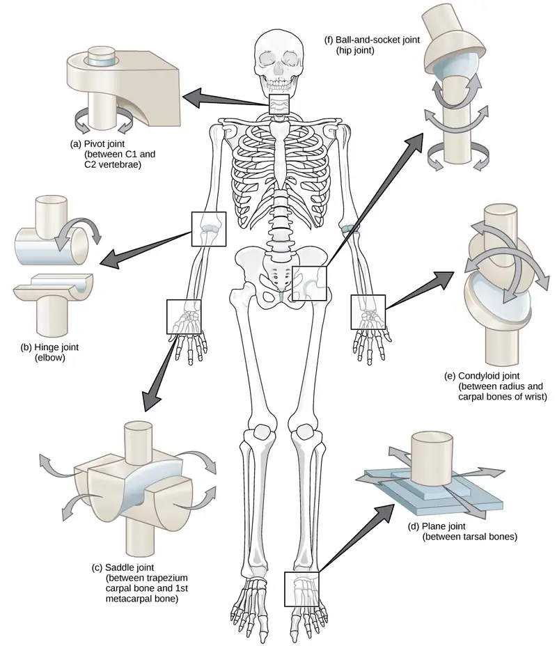
Planar Joints¶
Planar joints have bones with articulating surfaces that are flat or slightly curved faces. These joints allow for gliding movements, and so the joints are sometimes referred to as gliding joints. The range of motion is limited in these joints and does not involve rotation. Planar joints are found in the carpal bones in the hand and the tarsal bones of the foot, as well as between vertebrae (Figure 38.27).
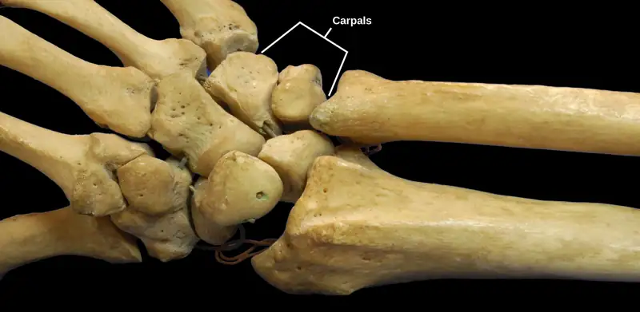
Hinge Joints¶
In hinge joints, the slightly rounded end of one bone fits into the slightly hollow end of the other bone. In this way, one bone moves while the other remains stationary, like the hinge of a door. The elbow is an example of a hinge joint. The knee is sometimes classified as a modified hinge joint (Figure 38.28).
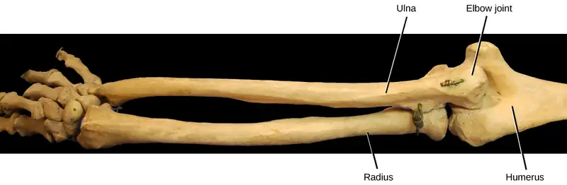
Pivot Joints¶
Pivot joints consist of the rounded end of one bone fitting into a ring formed by the other bone. This structure allows rotational movement, as the rounded bone moves around its own axis. An example of a pivot joint is the joint of the first and second vertebrae of the neck that allows the head to move back and forth (Figure 38.29). The joint of the wrist that allows the palm of the hand to be turned up and down is also a pivot joint.
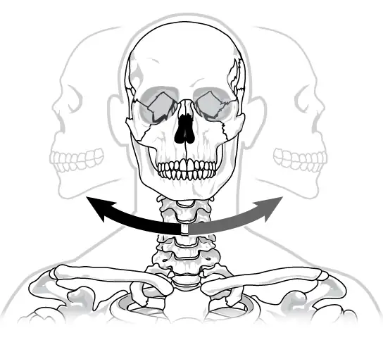
Condyloid Joints¶
Condyloid joints consist of an oval-shaped end of one bone fitting into a similarly oval-shaped hollow of another bone (Figure 38.30). This is also sometimes called an ellipsoidal joint. This type of joint allows angular movement along two axes, as seen in the joints of the wrist and fingers, which can move both side to side and up and down.
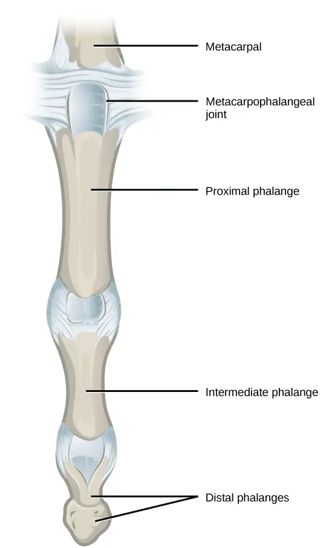
Saddle Joints¶
Saddle joints are so named because the ends of each bone resemble a saddle, with concave and convex portions that fit together. Saddle joints allow angular movements similar to condyloid joints but with a greater range of motion. An example of a saddle joint is the thumb joint, which can move back and forth and up and down, but more freely than the wrist or fingers (Figure 38.31).
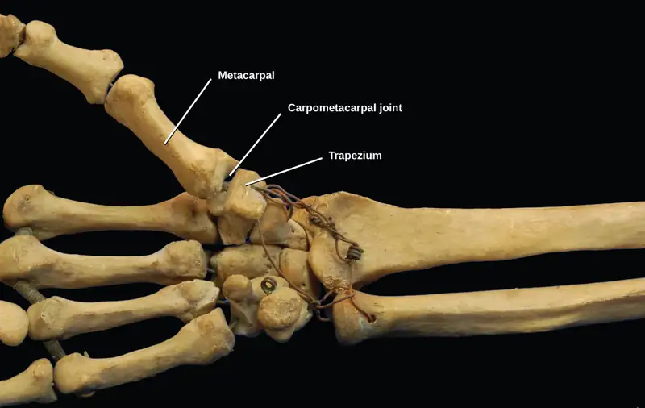
Ball-and-Socket Joints¶
Ball-and-socket joints possess a rounded, ball-like end of one bone fitting into a cuplike socket of another bone. This organization allows the greatest range of motion, as all movement types are possible in all directions. Examples of ball-and-socket joints are the shoulder and hip joints (Figure 38.32).
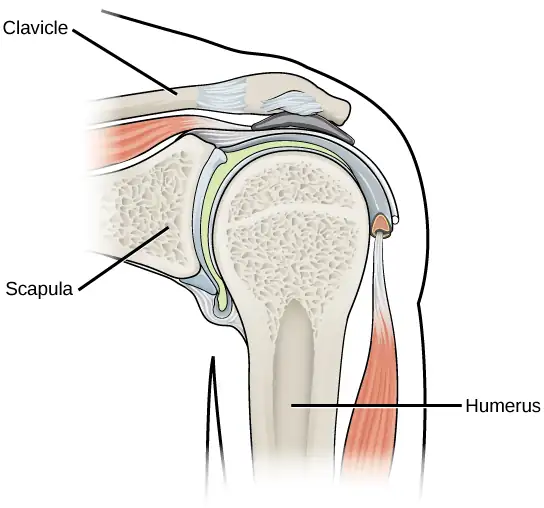
Interactive
Watch this animation showing the six types of synovial joints. synovial_joints
Career Connection: Rheumatologist
Rheumatologists are medical doctors who specialize in the diagnosis and treatment of disorders of the joints, muscles, and bones. They diagnose and treat diseases such as arthritis, musculoskeletal disorders, osteoporosis, and autoimmune diseases such as ankylosing spondylitis and rheumatoid arthritis.
Rheumatoid arthritis (RA) is an inflammatory disorder that primarily affects the synovial joints of the hands, feet, and cervical spine. Affected joints become swollen, stiff, and painful. Although it is known that RA is an autoimmune disease in which the body’s immune system mistakenly attacks healthy tissue, the cause of RA remains unknown. Immune cells from the blood enter joints and the synovium causing cartilage breakdown, swelling, and inflammation of the joint lining. Breakdown of cartilage causes bones to rub against each other causing pain. RA is more common in females than males and the age of onset is usually 40–50 years of age.
Rheumatologists can diagnose RA on the basis of symptoms such as joint inflammation and pain, X-ray and MRI imaging, and blood tests. Arthrography is a type of medical imaging of joints that uses a contrast agent, such as a dye, that is opaque to X-rays. This allows the soft tissue structures of joints—such as cartilage, tendons, and ligaments—to be visualized. An arthrogram differs from a regular X-ray by showing the surface of soft tissues lining the joint in addition to joint bones. An arthrogram allows early degenerative changes in joint cartilage to be detected before bones become affected.
There is currently no cure for RA; however, rheumatologists have a number of treatment options available. Early stages can be treated with rest of the affected joints by using a cane or by using joint splints that minimize inflammation. When inflammation has decreased, exercise can be used to strengthen the muscles that surround the joint and to maintain joint flexibility. If joint damage is more extensive, medications can be used to relieve pain and decrease inflammation. Anti-inflammatory drugs such as aspirin, topical pain relievers, and corticosteroid injections may be used. Surgery may be required in cases in which joint damage is severe.
38.4 Muscle Contraction and Locomotion¶
Learning Objectives
By the end of this section, you will be able to do the following:
- Classify the different types of muscle tissue
- Explain the role of muscles in locomotion
Muscle cells are specialized for contraction. Muscles allow for motions such as walking, and they also facilitate bodily processes such as respiration and digestion. The body contains three types of muscle tissue: skeletal muscle, cardiac muscle, and smooth muscle (Figure 38.33).
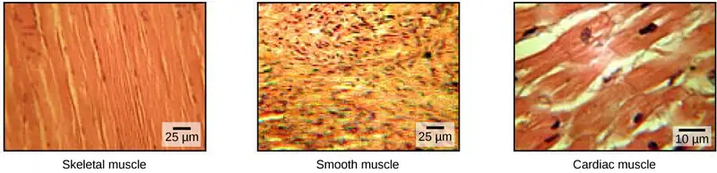
Skeletal muscle tissue forms skeletal muscles, which attach to bones or skin and control locomotion and any movement that can be consciously controlled. Because it can be controlled by thought, skeletal muscle is also called voluntary muscle. Skeletal muscles are long and cylindrical in appearance; when viewed under a microscope, skeletal muscle tissue has a striped or striated appearance. The striations are caused by the regular arrangement of contractile proteins (actin and myosin). Actin is a globular contractile protein that interacts with myosin for muscle contraction. Skeletal muscle also has multiple nuclei present in a single cell.
Smooth muscle tissue occurs in the walls of hollow organs such as the intestines, stomach, and urinary bladder, and around passages such as the respiratory tract and blood vessels. Smooth muscle has no striations, is not under voluntary control, has only one nucleus per cell, is tapered at both ends, and is called involuntary muscle.
Cardiac muscle tissue is only found in the heart, and cardiac contractions pump blood throughout the body and maintain blood pressure. Like skeletal muscle, cardiac muscle is striated, but unlike skeletal muscle, cardiac muscle cannot be consciously controlled and is called involuntary muscle. It has one nucleus per cell, is branched, and is distinguished by the presence of intercalated disks.
Skeletal Muscle Fiber Structure¶
Each skeletal muscle fiber is a skeletal muscle cell. These cells are incredibly large, with diameters of up to 100 µm and lengths of up to 30 cm. The plasma membrane of a skeletal muscle fiber is called the sarcolemma. The sarcolemma is the site of action potential conduction, which triggers muscle contraction. Within each muscle fiber are myofibrils—long cylindrical structures that lie parallel to the muscle fiber. Myofibrils run the entire length of the muscle fiber, and because they are only approximately 1.2 µm in diameter, hundreds to thousands can be found inside one muscle fiber. They attach to the sarcolemma at their ends, so that as myofibrils shorten, the entire muscle cell contracts (Figure 38.34).
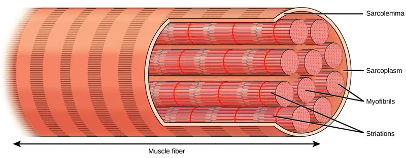
The striated appearance of skeletal muscle tissue is a result of repeating bands of the proteins actin and myosin that are present along the length of myofibrils. Dark A bands and light I bands repeat along myofibrils, and the alignment of myofibrils in the cell causes the entire cell to appear striated or banded.
Each I band has a dense line running vertically through the middle called a Z disc or Z line. The Z discs mark the border of units called sarcomeres, which are the functional units of skeletal muscle. One sarcomere is the space between two consecutive Z discs and contains one entire A band and two halves of an I band, one on either side of the A band. A myofibril is composed of many sarcomeres running along its length, and as the sarcomeres individually contract, the myofibrils and muscle cells shorten (Figure 38.35).
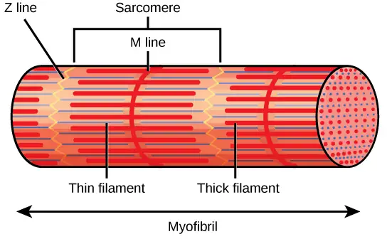
Myofibrils are composed of smaller structures called myofilaments. There are two main types of filaments: thick filaments and thin filaments; each has different compositions and locations. Thick filaments occur only in the A band of a myofibril. Thin filaments attach to a protein in the Z disc called alpha-actinin and occur across the entire length of the I band and partway into the A band. The region at which thick and thin filaments overlap has a dense appearance, as there is little space between the filaments. Thin filaments do not extend all the way into the A bands, leaving a central region of the A band that only contains thick filaments. This central region of the A band looks slightly lighter than the rest of the A band and is called the H zone. The middle of the H zone has a vertical line called the M line, at which accessory proteins hold together thick filaments. Both the Z disc and the M line hold myofilaments in place to maintain the structural arrangement and layering of the myofibril. Myofibrils are connected to each other by intermediate, or desmin, filaments that attach to the Z disc.
Thick and thin filaments are themselves composed of proteins. Thick filaments are composed of the protein myosin. The tail of a myosin molecule connects with other myosin molecules to form the central region of a thick filament near the M line, whereas the heads align on either side of the thick filament where the thin filaments overlap. The primary component of thin filaments is the actin protein. Two other components of the thin filament are tropomyosin and troponin. Actin has binding sites for myosin attachment. Strands of tropomyosin block the binding sites and prevent actin–myosin interactions when the muscles are at rest. Troponin consists of three globular subunits. One subunit binds to tropomyosin, one subunit binds to actin, and one subunit binds Ca2+ ions.
Interactive
View this animation showing the organization of muscle fibers. skeletal_muscle
Sliding Filament Model of Contraction¶
For a muscle cell to contract, the sarcomere must shorten. However, thick and thin filaments—the components of sarcomeres—do not shorten. Instead, they slide by one another, causing the sarcomere to shorten while the filaments remain the same length. The sliding filament theory of muscle contraction was developed to fit the differences observed in the named bands on the sarcomere at different degrees of muscle contraction and relaxation. The mechanism of contraction is the binding of myosin to actin, forming cross-bridges that generate filament movement (Figure 38.36).
![Part A of the illustration shows a relaxed muscle fiber. Two zigzagging Z lines extend from top to bottom. Thin actin filaments extend left and right from each Z line. Between the Z lines is a vertical M line. Thick myosin filaments extend left and right from the M line. The thick and thin filaments partially overlap. The A band represents the length that the thick filaments extend from both sides of the M line. The I band represents the part of the thin filaments that does not overlap with the thick filaments. Part B shows a contracted muscle fiber. In the contracted fiber, the thick and thin filaments completely overlap. The A band is the same length as in the uncontracted muscle, but the I band has shrunken to the width of the Z line.](img/figure-b38-04-04-filaments.webp)
When a sarcomere shortens, some regions shorten whereas others stay the same length. A sarcomere is defined as the distance between two consecutive Z discs or Z lines; when a muscle contracts, the distance between the Z discs is reduced. The H zone—the central region of the A zone—contains only thick filaments and is shortened during contraction. The I band contains only thin filaments and also shortens. The A band does not shorten—it remains the same length—but A bands of different sarcomeres move closer together during contraction, eventually disappearing. Thin filaments are pulled by the thick filaments toward the center of the sarcomere until the Z discs approach the thick filaments. The zone of overlap, in which thin filaments and thick filaments occupy the same area, increases as the thin filaments move inward.
ATP and Muscle Contraction¶
The motion of muscle shortening occurs as myosin heads bind to actin and pull the actin inwards. This action requires energy, which is provided by ATP. Myosin binds to actin at a binding site on the globular actin protein. Myosin has another binding site for ATP at which enzymatic activity hydrolyzes ATP to ADP, releasing an inorganic phosphate molecule and energy.
ATP binding causes myosin to release actin, allowing actin and myosin to detach from each other. After this happens, the newly bound ATP is converted to ADP and inorganic phosphate, Pi. The enzyme at the binding site on myosin is called ATPase. The energy released during ATP hydrolysis changes the angle of the myosin head into a “cocked” position. The myosin head is then in a position for further movement, possessing potential energy, but ADP and Pi are still attached. If actin binding sites are covered and unavailable, the myosin will remain in the high energy configuration with ATP hydrolyzed, but still attached.
If the actin binding sites are uncovered, a cross-bridge will form; that is, the myosin head spans the distance between the actin and myosin molecules. Pi is then released, allowing myosin to expend the stored energy as a conformational change. The myosin head moves toward the M line, pulling the actin along with it. As the actin is pulled, the filaments move approximately 10 nm toward the M line. This movement is called the power stroke, as it is the step at which force is produced. As the actin is pulled toward the M line, the sarcomere shortens and the muscle contracts.
When the myosin head is “cocked,” it contains energy and is in a high-energy configuration. This energy is expended as the myosin head moves through the power stroke; at the end of the power stroke, the myosin head is in a low-energy position. After the power stroke, ADP is released; however, the cross-bridge formed is still in place, and actin and myosin are bound together. ATP can then attach to myosin, which allows the cross-bridge cycle to start again and further muscle contraction can occur (Figure 38.37).
Interactive
Watch this video explaining how a muscle contraction is signaled. contract_muscle
Visual Connection
![Illustration shows two actin filaments coiled with tropomyosin in a helix, sitting beside a myosin filament. Each actin filament is made of round actin subunits linked in a chain. A bulbous myosin head with A D P and phosphate attached sticks up from the myosin filament. The contraction cycle begins when calcium binds to the actin filament, allowing the myosin head to from a cross bridge. During the power stroke, the myosin head bends and A D P and phosphate are released. As a result, the actin filament moves relative to the myosin filament. A new molecule of A T P binds to the myosin head, causing it to detach. The A T P hydrolyzes to A D P and phosphate, returning the myosin head to the cocked position.](img/figure-38-04-05.webp)
Which of the following statements about muscle contraction is true?
- The power stroke occurs when ATP is hydrolyzed to ADP and phosphate.
- The power stroke occurs when ADP and phosphate dissociate from the myosin head.
- The power stroke occurs when ADP and phosphate dissociate from the actin active site.
- The power stroke occurs when Ca2+ binds the calcium head.
Interactive
View this animation of the cross-bridge muscle contraction.
Regulatory Proteins¶
When a muscle is in a resting state, actin and myosin are separated. To keep actin from binding to the active site on myosin, regulatory proteins block the molecular binding sites. Tropomyosin blocks myosin binding sites on actin molecules, preventing cross-bridge formation and preventing contraction in a muscle without nervous input. Troponin binds to tropomyosin and helps to position it on the actin molecule; it also binds calcium ions.
To enable a muscle contraction, tropomyosin must change conformation, uncovering the myosin-binding site on an actin molecule and allowing cross-bridge formation. This can only happen in the presence of calcium, which is kept at extremely low concentrations in the sarcoplasm. If present, calcium ions bind to troponin, causing conformational changes in troponin that allow tropomyosin to move away from the myosin binding sites on actin. Once the tropomyosin is removed, a cross-bridge can form between actin and myosin, triggering contraction. Cross-bridge cycling continues until either Ca2+ ions or ATP are no longer available and tropomyosin again covers the binding sites on actin.
Excitation–Contraction Coupling¶
Excitation–contraction coupling is the link (transduction) between the action potential generated in the sarcolemma and the start of a muscle contraction. The trigger for calcium release from the sarcoplasmic reticulum into the sarcoplasm is a neural signal. Each skeletal muscle fiber is controlled by a motor neuron, which conducts signals from the brain or spinal cord to the muscle. The area of the sarcolemma on the muscle fiber that interacts with the neuron is called the motor end plate. The end of the neuron’s axon is called the synaptic terminal, and it does not actually contact the motor end plate. A small space called the synaptic cleft separates the synaptic terminal from the motor end plate. Electrical signals travel along the neuron’s axon, which branches through the muscle and connects to individual muscle fibers at a neuromuscular junction.
The ability of cells to communicate electrically requires that the cells expend energy to create an electrical gradient across their cell membranes. This charge gradient is carried by ions, which are differentially distributed across the membrane. Each ion exerts an electrical influence and a concentration influence. Just as milk will eventually mix with coffee without the need to stir, ions also distribute themselves evenly, if they are permitted to do so. In this case, they are not permitted to return to an evenly mixed state.
The sodium–potassium ATPase uses cellular energy to move K+ ions inside the cell and Na+ ions outside. This alone accumulates a small electrical charge, but a big concentration gradient. There is lots of K+ in the cell and lots of Na+ outside the cell. Potassium is able to leave the cell through K+ channels that are open 90% of the time, and it does. However, Na+ channels are rarely open, so Na+ remains outside the cell. When K+ leaves the cell, obeying its concentration gradient, that effectively leaves a negative charge behind. So at rest, there is a large concentration gradient for Na+ to enter the cell, and there is an accumulation of negative charges left behind in the cell. This is the resting membrane potential. Potential in this context means a separation of electrical charge that is capable of doing work. It is measured in volts, just like a battery. However, the transmembrane potential is considerably smaller (0.07 V); therefore, the small value is expressed as millivolts (mV) or 70 mV. Because the inside of a cell is negative compared with the outside, a minus sign signifies the excess of negative charges inside the cell, −70 mV.
If an event changes the permeability of the membrane to Na+ ions, they will enter the cell. That will change the voltage. This is an electrical event, called an action potential, that can be used as a cellular signal. Communication occurs between nerves and muscles through neurotransmitters. Neuron action potentials cause the release of neurotransmitters from the synaptic terminal into the synaptic cleft, where they can then diffuse across the synaptic cleft and bind to a receptor molecule on the motor end plate. The motor end plate possesses junctional folds—folds in the sarcolemma that create a large surface area for the neurotransmitter to bind to receptors. The receptors are actually sodium channels that open to allow the passage of Na+ into the cell when they receive a neurotransmitter signal.
Acetylcholine (ACh) is a neurotransmitter released by motor neurons that binds to receptors in the motor end plate. Neurotransmitter release occurs when an action potential travels down the motor neuron’s axon, resulting in altered permeability of the synaptic terminal membrane and an influx of calcium. The Ca2+ ions allow synaptic vesicles to move to and bind with the presynaptic membrane (on the neuron), and release neurotransmitter from the vesicles into the synaptic cleft. Once released by the synaptic terminal, ACh diffuses across the synaptic cleft to the motor end plate, where it binds with ACh receptors. As a neurotransmitter binds, these ion channels open, and Na+ ions cross the membrane into the muscle cell. This reduces the voltage difference between the inside and outside of the cell, which is called depolarization. As ACh binds at the motor end plate, this depolarization is called an end-plate potential. The depolarization then spreads along the sarcolemma, creating an action potential as sodium channels adjacent to the initial depolarization site sense the change in voltage and open. The action potential moves across the entire cell, creating a wave of depolarization.
ACh is broken down by the enzyme acetylcholinesterase (AChE) into acetyl and choline. AChE resides in the synaptic cleft, breaking down ACh so that it does not remain bound to ACh receptors, which would cause unwanted extended muscle contraction (Figure 38.38).
Visual Connection
![There are four steps in the start of a muscle contraction. Step 1: Acetylcholine released from synaptic vesicles in the axon terminal binds to receptors on the muscle cell plasma membrane. Step 2: An action potential is initiated that travels down the T tubule. Step 3: Calcium ions are released from the sarcoplasmic reticulum in response to the change in voltage. Step 4: Calcium ions bind to troponin, exposing active sites on actin. Cross-bridge formation occurs and muscles contract. Three additional steps are part of the end of a muscle contraction. Step 5: Acetylcholine is removed from the synaptic cleft by acetylcholinesterase. Step 6: Calcium ions are transported back into the sarcoplasmic reticulum. Step 7: Tropomyosin covers active sites on actin preventing cross-bridge formation, so the muscle contraction ends.](img/figure-38-04-06f.webp)
The deadly nerve gas Sarin irreversibly inhibits Acetylcholinesterase. What effect would Sarin have on muscle contraction?
After depolarization, the membrane returns to its resting state. This is called repolarization, during which voltage-gated sodium channels close. Potassium channels continue at 90% conductance. Because the plasma membrane sodium–potassium ATPase always transports ions, the resting state (negatively charged inside relative to the outside) is restored. The period immediately following the transmission of an impulse in a nerve or muscle, in which a neuron or muscle cell regains its ability to transmit another impulse, is called the refractory period. During the refractory period, the membrane cannot generate another action potential. The refractory period allows the voltage-sensitive ion channels to return to their resting configurations. The sodium potassium ATPase continually moves Na+ back out of the cell and K+ back into the cell, and the K+ leaks out leaving negative charge behind. Very quickly, the membrane repolarizes, so that it can again be depolarized.
Control of Muscle Tension¶
Neural control initiates the formation of actin–myosin cross-bridges, leading to the sarcomere shortening involved in muscle contraction. These contractions extend from the muscle fiber through connective tissue to pull on bones, causing skeletal movement. The pull exerted by a muscle is called tension, and the amount of force created by this tension can vary. This enables the same muscles to move very light objects and very heavy objects. In individual muscle fibers, the amount of tension produced depends on the cross-sectional area of the muscle fiber and the frequency of neural stimulation.
The number of cross-bridges formed between actin and myosin determine the amount of tension that a muscle fiber can produce. Cross-bridges can only form where thick and thin filaments overlap, allowing myosin to bind to actin. If more cross-bridges are formed, more myosin will pull on actin, and more tension will be produced.
The ideal length of a sarcomere during production of maximal tension occurs when thick and thin filaments overlap to the greatest degree. If a sarcomere at rest is stretched past an ideal resting length, thick and thin filaments do not overlap to the greatest degree, and fewer cross-bridges can form. This results in fewer myosin heads pulling on actin, and less tension is produced. As a sarcomere is shortened, the zone of overlap is reduced as the thin filaments reach the H zone, which is composed of myosin tails. Because it is myosin heads that form cross-bridges, actin will not bind to myosin in this zone, reducing the tension produced by this myofiber. If the sarcomere is shortened even more, thin filaments begin to overlap with each other—reducing cross-bridge formation even further, and producing even less tension. Conversely, if the sarcomere is stretched to the point at which thick and thin filaments do not overlap at all, no cross-bridges are formed and no tension is produced. This amount of stretching does not usually occur because accessory proteins, internal sensory nerves, and connective tissue oppose extreme stretching.
The primary variable determining force production is the number of myofibers within the muscle that receive an action potential from the neuron that controls that fiber. When using the biceps to pick up a pencil, the motor cortex of the brain only signals a few neurons of the biceps, and only a few myofibers respond. In vertebrates, each myofiber responds fully if stimulated. When picking up a piano, the motor cortex signals all of the neurons in the biceps and every myofiber participates. This is close to the maximum force the muscle can produce. As mentioned above, increasing the frequency of action potentials (the number of signals per second) can increase the force a bit more, because the tropomyosin is flooded with calcium.
Chapter Review¶
Key Terms¶
- abduction
- when a bone moves away from the midline of the body
- acetylcholinesterase
- (AChE) enzyme that breaks down ACh into acetyl and choline
- actin
- globular contractile protein that interacts with myosin for muscle contraction
- adduction
- movement of the limbs inward after abduction
- amphiarthrosis
- joint that allows slight movement; includes syndesmoses and symphyses
- angular movement
- produced when the angle between the bones of a joint changes
- appendicular skeleton
- composed of the bones of the upper limbs, which function to grasp and manipulate objects, and the lower limbs, which permit locomotion
- appositional growth
- increase in the diameter of bones by the addition of bone tissue at the surface of bones
- articulation
- any place where two bones are joined
- auditory ossicle
- (also, middle ear) transduces sounds from the air into vibrations in the fluid-filled cochlea
- axial skeleton
- forms the central axis of the body and includes the bones of the skull, the ossicles of the middle ear, the hyoid bone of the throat, the vertebral column, and the thoracic cage (ribcage)
- ball-and-socket joint
- joint with a rounded, ball-like end of one bone fitting into a cuplike socket of another bone
- bone
- (also, osseous tissue) connective tissue that constitutes the endoskeleton
- bone remodeling
- replacement of old bone tissue by new bone tissue
- calcification
- process of deposition of mineral salts in the collagen fiber matrix that crystallizes and hardens the tissue
- cardiac muscle tissue
- muscle tissue found only in the heart; cardiac contractions pump blood throughout the body and maintain blood pressure
- carpus
- eight bones that comprise the wrist
- cartilaginous joint
- joint in which the bones are connected by cartilage
- circumduction
- movement of a limb in a circular motion
- clavicle
- S-shaped bone that positions the arms laterally
- compact bone
- forms the hard external layer of all bones
- condyloid joint
- oval-shaped end of one bone fitting into a similarly oval-shaped hollow of another bone
- coxal bone
- hip bone
- cranial bone
- one of eight bones that form the cranial cavity that encloses the brain and serves as an attachment site for the muscles of the head and neck
- depression
- movement downward of a bone, such as after the shoulders are shrugged and the scapulae return to their normal position from an elevated position; opposite of elevation
- diaphysis
- central shaft of bone, contains bone marrow in a medullary cavity
- diarthrosis
- joint that allows for free movement of the joint; found in synovial joints
- dorsiflexion
- bending at the ankle such that the toes are lifted toward the knee
- elevation
- movement of a bone upward, such as when the shoulders are shrugged, lifting the scapulae
- endochondral ossification
- process of bone development from hyaline cartilage
- endoskeleton
- skeleton of living cells that produces a hard, mineralized tissue located within the soft tissue of organisms
- epiphyseal plate
- region between the diaphysis and epiphysis that is responsible for the lengthwise growth of long bones
- epiphysis
- rounded end of bone, covered with articular cartilage and filled with red bone marrow, which produces blood cells
- eversion
- movement of the sole of the foot outward, away from the midline of the body; opposite of inversion
- exoskeleton
- a secreted cellular product external skeleton that consists of a hard encasement on the surface of an organism
- extension
- movement in which the angle between the bones of a joint increases; opposite of flexion
- facial bone
- one of the 14 bones that form the face; provides cavities for the sense organs (eyes, mouth, and nose) and attachment points for facial muscles
- femur
- (also, thighbone) longest, heaviest, and strongest bone in the body
- fibrous joint
- joint held together by fibrous connective tissue
- fibula
- (also, calf bone) parallels and articulates with the tibia
- flat bone
- thin and relatively broad bone found where extensive protection of organs is required or where broad surfaces of muscle attachment are required
- flexion
- movement in which the angle between the bones decreases; opposite of extension
- forearm
- extends from the elbow to the wrist and consists of two bones: the ulna and the radius
- gliding movement
- when relatively flat bone surfaces move past each other
- gomphosis
- the joint in which the tooth fits into the socket like a peg
- Haversian canal
- contains the bone’s blood vessels and nerve fibers
- hinge joint
- slightly rounded end of one bone fits into the slightly hollow end of the other bone
- humerus
- only bone of the arm
- hydrostatic skeleton
- skeleton that consists of aqueous fluid held under pressure in a closed body compartment
- hyoid bone
- lies below the mandible in the front of the neck
- hyperextension
- extension past the regular anatomical position
- intervertebral disc
- composed of fibrous cartilage; lies between adjacent vertebrae from the second cervical vertebra to the sacrum
- intramembranous ossification
- process of bone development from fibrous membranes
- inversion
- soles of the feet moving inward, toward the midline of the body
- irregular bone
- bone with complex shapes; examples include vertebrae and hip bones
- joint
- point at which two or more bones meet
- lamella
- layer of compact tissue that surrounds a central canal called the Haversian canal
- lateral rotation
- rotation away from the midline of the body
- long bone
- bone that is longer than wide, and has a shaft and two ends
- lower limb
- consists of the thigh, the leg, and the foot
- medial rotation
- rotation toward the midline of the body
- metacarpus
- five bones that comprise the palm
- metatarsal
- one of the five bones of the foot
- motor end plate
- sarcolemma of the muscle fiber that interacts with the neuron
- myofibril
- long cylindrical structures that lie parallel to the muscle fiber
- myofilament
- small structures that make up myofibrils
- myosin
- contractile protein that interacts with actin for muscle contraction
- opposition
- movement of the thumb toward the fingers of the same hand, making it possible to grasp and hold objects
- osseous tissue
- connective tissue that constitutes the endoskeleton
- ossification
- (also, osteogenesis) process of bone formation by osteoblasts
- osteoblast
- bone cell responsible for bone formation
- osteoclast
- large bone cells with up to 50 nuclei, responsible for bone remodeling
- osteocyte
- mature bone cells and the main cell in bone tissue
- osteon
- cylindrical structure aligned parallel to the long axis of the bone
- patella
- (also, kneecap) triangular bone that lies anterior to the knee joint
- pectoral girdle
- bones that transmit the force generated by the upper limbs to the axial skeleton
- pelvic girdle
- bones that transmit the force generated by the lower limbs to the axial skeleton
- phalange
- one of the bones of the fingers or toes
- pivot joint
- joint with the rounded end of one bone fitting into a ring formed by the other bone
- planar joint
- joint with bones whose articulating surfaces are flat
- plantar flexion
- bending at the ankle such that the heel is lifted, such as when standing on the toes
- pronation
- movement in which the palm faces backward
- protraction
- anterior movement of a bone in the horizontal plane
- radius
- bone located along the lateral (thumb) side of the forearm; articulates with the humerus at the elbow
- resorption
- process by which osteoclasts release minerals stored in bones
- retraction
- movement in which a joint moves back into position after protraction
- rib
- one of 12 pairs of long, curved bones that attach to the thoracic vertebrae and curve toward the front of the body to form the ribcage
- rotational movement
- movement of a bone as it rotates around its own longitudinal axis
- saddle joint
- joint with concave and convex portions that fit together; named because the ends of each bone resemble a saddle
- sarcolemma
- plasma membrane of a skeletal muscle fiber
- sarcomere
- functional unit of skeletal muscle
- scapula
- flat, triangular bone located at the posterior pectoral girdle
- sesamoid bone
- small, flat bone shaped like a sesame seed; develops inside tendons
- short bone
- bone that has the same width and length, giving it a cube-like shape
- skeletal muscle tissue
- forms skeletal muscles, which attach to bones and control locomotion and any movement that can be consciously controlled
- skull
- bone that supports the structures of the face and protects the brain
- smooth muscle tissue
- occurs in the walls of hollow organs such as the intestines, stomach, and urinary bladder, and around passages such as the respiratory tract and blood vessels
- spongy bone tissue
- forms the inner layer of all bones
- sternum
- (also, breastbone) long, flat bone located at the front of the chest
- supination
- movement of the radius and ulna bones of the forearm so that the palm faces forward
- sutural bone
- small, flat, irregularly shaped bone that forms between the flat bones of the cranium
- suture
- short fiber of connective tissue that holds the skull bones tightly in place; found only in the skull
- symphysis
- hyaline cartilage covers the end of the bone, but the connection between bones occurs through fibrocartilage; symphyses are found at the joints between vertebrae
- synarthrosis
- joint that is immovable
- synchondrosis
- bones joined by hyaline cartilage; synchondroses are found in the epiphyseal plates of growing bones in children
- syndesmosis
- joint in which the bones are connected by a band of connective tissue, allowing for more movement than in a suture
- synovial joint
- only joint that has a space between the adjoining bones
- tarsal
- one of the seven bones of the ankle
- thick filament
- a group of myosin molecules
- thin filament
- two polymers of actin wound together along with tropomyosin and troponin
- thoracic cage
- (also, ribcage) skeleton of the chest, which consists of the ribs, thoracic vertebrae, sternum, and costal cartilages
- tibia
- (also, shinbone) large bone of the leg that is located directly below the knee
- trabeculae
- lamellae that are arranged as rods or plates
- tropomyosin
- acts to block myosin binding sites on actin molecules, preventing cross-bridge formation and preventing contraction until a muscle receives a neuron signal
- troponin
- binds to tropomyosin and helps to position it on the actin molecule, and also binds calcium ions
- ulna
- bone located on the medial aspect (pinky-finger side) of the forearm
- vertebral column
- (also, spine) surrounds and protects the spinal cord, supports the head, and acts as an attachment point for ribs and muscles of the back and neck
Summary¶
38.1 Types of Skeletal Systems¶
The three types of skeleton designs are hydrostatic skeletons, exoskeletons, and endoskeletons. A hydrostatic skeleton is formed by a fluid-filled compartment held under hydrostatic pressure; movement is created by the muscles producing pressure on the fluid. An exoskeleton is a hard external skeleton that protects the outer surface of an organism and enables movement through muscles attached on the inside. An endoskeleton is an internal skeleton composed of hard, mineralized tissue that also enables movement by attachment to muscles. The human skeleton is an endoskeleton that is composed of the axial and appendicular skeleton. The axial skeleton is composed of the bones of the skull, ossicles of the ear, hyoid bone, vertebral column, and ribcage. The skull consists of eight cranial bones and 14 facial bones. Six bones make up the ossicles of the middle ear, while the hyoid bone is located in the neck under the mandible. The vertebral column contains 26 bones, and it surrounds and protects the spinal cord. The thoracic cage consists of the sternum, ribs, thoracic vertebrae, and costal cartilages. The appendicular skeleton is made up of the limbs of the upper and lower limbs. The pectoral girdle is composed of the clavicles and the scapulae. The upper limb contains 30 bones in the arm, the forearm, and the hand. The pelvic girdle attaches the lower limbs to the axial skeleton. The lower limb includes the bones of the thigh, the leg, and the foot.
38.2 Bone¶
Bone, or osseous tissue, is connective tissue that includes specialized cells, mineral salts, and collagen fibers. The human skeleton can be divided into long bones, short bones, flat bones, and irregular bones. Compact bone tissue is composed of osteons and forms the external layer of all bones. Spongy bone tissue is composed of trabeculae and forms the inner part of all bones. Four types of cells compose bony tissue: osteocytes, osteoclasts, osteoprogenitor cells, and osteoblasts. Ossification is the process of bone formation by osteoblasts. Intramembranous ossification is the process of bone development from fibrous membranes. Endochondral ossification is the process of bone development from hyaline cartilage. Long bones lengthen as chondrocytes divide and secrete hyaline cartilage. Osteoblasts replace cartilage with bone. Appositional growth is the increase in the diameter of bones by the addition of bone tissue at the surface of bones. Bone remodeling involves the processes of bone deposition by osteoblasts and bone resorption by osteoclasts. Bone repair occurs in four stages and can take several months.
38.3 Joints and Skeletal Movement¶
The structural classification of joints divides them into bony, fibrous, cartilaginous, and synovial joints. The bones of fibrous joints are held together by fibrous connective tissue; the three types of fibrous joints are sutures, syndesomes, and gomphoses. Cartilaginous joints are joints in which the bones are connected by cartilage; the two types of cartilaginous joints are synchondroses and symphyses. Synovial joints are joints that have a space between the adjoining bones. The functional classification divides joints into three categories: synarthroses, amphiarthroses, and diarthroses. The movement of synovial joints can be classified as one of four different types: gliding, angular, rotational, or special movement. Gliding movements occur as relatively flat bone surfaces move past each other. Angular movements are produced when the angle between the bones of a joint changes. Rotational movement is the movement of a bone as it rotates around its own longitudinal axis. Special movements include inversion, eversion, protraction, retraction, elevation, depression, dorsiflexion, plantar flexion, supination, pronation, and opposition. Synovial joints are also classified into six different categories on the basis of the shape and structure of the joint: planar, hinge, pivot, condyloid, saddle, and ball-and-socket.
38.4 Muscle Contraction and Locomotion¶
The body contains three types of muscle tissue: skeletal muscle, cardiac muscle, and smooth muscle. Skeleton muscle tissue is composed of sarcomeres, the functional units of muscle tissue. Muscle contraction occurs when sarcomeres shorten, as thick and thin filaments slide past each other, which is called the sliding filament model of muscle contraction. ATP provides the energy for cross-bridge formation and filament sliding. Regulatory proteins, such as troponin and tropomyosin, control cross-bridge formation. Excitation–contraction coupling transduces the electrical signal of the neuron, via acetylcholine, to an electrical signal on the muscle membrane, which initiates force production. The number of muscle fibers contracting determines how much force the whole muscle produces.
Review Questions¶
38.1 Types of Skeletal Systems¶
1. The forearm consists of the:
- radius and ulna
- radius and humerus
- ulna and humerus
- humerus and carpus
Answer
A
2. The pectoral girdle consists of the:
- clavicle and sternum
- sternum and scapula
- clavicle and scapula
- clavicle and coccyx
Answer
C
3. All of the following are groups of vertebrae except ________, which is a curvature.
- thoracic
- cervical
- lumbar
- pelvic
Answer
D
4. Which of these is a facial bone?
- frontal
- occipital
- lacrimal
- temporal
Answer
C
5. Which of the following is not a true statement comparing exoskeletons and endoskeletons?
- Endoskeletons can support larger organisms.
- Only endoskeletons can grow as an organism grows.
- Exoskeletons provide greater protection of the internal organs.
- Exoskeletons provide less mechanical leverage.
Answer
D
38.2 Bone¶
6. The Haversian canal:
- is arranged as rods or plates
- contains the bone’s blood vessels and nerve fibers
- is responsible for the lengthwise growth of long bones
- synthesizes and secretes matrix
Answer
B
7. The epiphyseal plate:
- is arranged as rods or plates
- contains the bone’s blood vessels and nerve fibers
- is responsible for the lengthwise growth of long bones
- synthesizes and secretes bone matrix
Answer
C
8. The cells responsible for bone resorption are ________.
- osteoclasts
- osteoblasts
- fibroblasts
- osteocytes
Answer
A
9. Compact bone is composed of ________.
- trabeculae
- compacted collagen
- osteons
- calcium phosphate only
Answer
C
10. Osteoporosis is a condition where bones become weak and brittle. It is caused by an imbalance in the activity of which cells?
- osteoclasts and osteoblasts
- osteoclasts and osteocytes
- osteoblasts and chondrocytes
- osteocytes and chondrocytes
Answer
A
11. While assembling a skeleton of a new species, a scientist points to one of the bones and observes that it looks like the most likely site of leg muscle attachment. What kind of bone did she indicate?
- sesamoid bone
- long bone
- trabecular bone
- flat bone
Answer
D
38.3 Joints and Skeletal Movement¶
12. Synchondroses and symphyses are:
- synovial joints
- cartilaginous joints
- fibrous joints
- condyloid joints
Answer
B
13. The movement of bone away from the midline of the body is called ________.
- circumduction
- extension
- adduction
- abduction
Answer
D
14. Which of the following is not a characteristic of the synovial fluid?
- lubrication
- shock absorption
- regulation of water balance in the joint
- protection of articular cartilage
Answer
C
15. The elbow is an example of which type of joint?
- hinge
- pivot
- saddle
- gliding
Answer
A
16. A high ankle sprain is an injury caused by over-stretching the ligaments connecting the tibia and fibula. What type of joint is involved in this sprain?
- ball and socket
- gomphosis
- syndesmosis
- symphysis
Answer
C
38.4 Muscle Contraction and Locomotion¶
17. In relaxed muscle, the myosin-binding site on actin is blocked by ________.
- titin
- troponin
- myoglobin
- tropomyosin
Answer
D
18. The cell membrane of a muscle fiber is called a ________.
- myofibril
- sarcolemma
- sarcoplasm
- myofilament
Answer
B
19. The muscle relaxes if no new nerve signal arrives. However the neurotransmitter from the previous stimulation is still present in the synapse. The activity of ________ helps to remove this neurotransmitter.
- myosin
- action potential
- tropomyosin
- acetylcholinesterase
Answer
D
20. The ability of a muscle to generate tension immediately after stimulation is dependent on:
- myosin interaction with the M line
- overlap of myosin and actin
- actin attachments to the Z line
- none of the above
Answer
D
21. Botulinum toxin causes flaccid paralysis of the muscles, and is used for cosmetic purposes under the name Botox. Which of the following is the most likely mechanism of action of Botox?
- Botox decreases the production of acetylcholinesterase.
- Botox increases calcium release from the sarcoplasmic reticulum.
- Botox blocks the ATP binding site in actin.
- Botox decreases the release of acetylcholine from motor neurons.
Answer
D
Critical Thinking Questions¶
38.1 Types of Skeletal Systems¶
22. What are the major differences between the male pelvis and female pelvis that permit childbirth in females?
Answer
The female pelvis is tilted forward and is wider, lighter, and shallower than the male pelvis. It also has a pubic angle that is broader than the male pelvis.
23. What are the major differences between the pelvic girdle and the pectoral girdle that allow the pelvic girdle to bear the weight of the body?
Answer
The pelvic girdle is securely attached to the body by strong ligaments, unlike the pectoral girdle, which is sparingly attached to the ribcage. The sockets of the pelvic girdle are deep, allowing the femur to be more stable than the pectoral girdle, which has shallow sockets for the scapula. Most tetrapods have 75 percent of their weight on the front legs because the head and neck are so heavy; the advantage of the shoulder joint is more degrees of freedom in movement.
24. Both hydrostatic and exoskeletons can protect internal organs from harm. Contrast the ways the skeletons perform these functions.
Answer
Hydrostatic skeletons protect internal organs from harm by cushioning them from external shock. However, these skeletons do not provide protection from external trauma. Exoskeletons are hard structures that protect the organs from damage caused by their environment. However, since they are rigid, they provide little shock absorption, so the animal will need to have other ways of cushioning its internal organs.
25. Scoliosis is a medical condition where the spine develops a sideways curvature. How would this change interfere with the normal function of the spine?
Answer
Normal vertebral columns are stacked in a vertical line. If the spine were to curve to the side instead this would disrupt the support and cushioning functions of the vertebrae. When the spine is out of alignment, it cannot absorb shock as well so normal activities can become painful and cause back problems later in life. The curvature also disrupts posture and structure, even disrupting lung expansion in severe cases due to changes to rib location.
38.2 Bone¶
26. What are the major differences between spongy bone and compact bone?
Answer
Compact bone tissue forms the hard external layer of all bones and consists of osteons. Compact bone tissue is prominent in areas of bone at which stresses are applied in only a few directions. Spongy bone tissue forms the inner layer of all bones and consists of trabeculae. Spongy bone is prominent in areas of bones that are not heavily stressed or at which stresses arrive from many directions.
27. What are the roles of osteoblasts, osteocytes, and osteoclasts?
Answer
Osteocytes function in the exchange of nutrients and wastes with the blood. They also maintain normal bone structure by recycling the mineral salts in the bony matrix. Osteoclasts remove bone tissue by releasing lysosomal enzymes and acids that dissolve the bony matrix. Osteoblasts are bone cells that are responsible for bone formation.
28. Thalidomide was a morning sickness drug given to pregnant people; it caused babies to be born without arm bones. If recent studies have shown that thalidomide prevents the formation of new blood vessels, describe the type of bone development inhibited by the drug and what stage of ossification was affected.
Answer
Thalidomide effected the development of the long bones of the arms, disrupting endochondral ossification. The bones would have been able to develop into a template made of the calcified cartilage matrix, but new blood vessels could not be created. Since no vessels invade the template, the structure is not converted into trabecular bone.
38.3 Joints and Skeletal Movement¶
29. What movements occur at the hip joint and knees as you bend down to touch your toes?
Answer
The hip joint is flexed and the knees are extended.
30. What movement(s) occur(s) at the scapulae when you shrug your shoulders?
Answer
Elevation is the movement of a bone upward, such as when the shoulders are shrugged, lifting the scapulae. Depression is the downward movement of a bone, such as after the shoulders are shrugged and the scapulae return to their normal position from an elevated position.
31. Describe the joints and motions involved in taking a step forward if a person is initially standing still. Assume the person holds his foot at the same angle throughout the motion.
Answer
Taking a step would require bending the knee (modified hinge joint) and moving the leg in the hip (ball and socket joint) since the motion of the foot is excluded. As the foot comes off the ground in the step, the hip joint is going to move the femur in a protracted motion and the knee will flex the shin toward the thigh. As the foot lands, the knee extends the leg and the hip retracts the femur.
38.4 Muscle Contraction and Locomotion¶
32. How would muscle contractions be affected if ATP was completely depleted in a muscle fiber?
Answer
Because ATP is required for myosin to release from actin, muscles would remain rigidly contracted until more ATP was available for the myosin cross-bridge release. This is why dead vertebrates undergo rigor mortis.
33. What factors contribute to the amount of tension produced in an individual muscle fiber?
Answer
The cross-sectional area, the length of the muscle fiber at rest, and the frequency of neural stimulation.
34. What effect will low blood calcium have on neurons? What effect will low blood calcium have on skeletal muscles?
Answer
Neurons will not be able to release neurotransmitter without calcium. Skeletal muscles have calcium stored and don’t need any from the outside.
35. Skeletal muscles can only produce a mechanical force as they are contracted, but a leg flexes and extends while walking. How can muscles perform this task?
Answer
Muscles are able to drive locomotion (and other tasks involving opposing motions) because they are paired. When walking, the hamstring muscle contracts first, causing the leg to flex around the knee joint. The quadriceps muscle then contracts (while the hamstring relaxes and extends) to straighten the leg as the foot returns to the ground.
Art Exercise¶
38.2 Bone¶
36. Figure 38.19 Which of the following statements about bone tissue is false?
- Compact bone tissue is made of cylindrical osteons that are aligned such that they travel the length of the bone.
- Haversian canals contain blood vessels only.
- Haversian canals contain blood vessels and nerve fibers.
- Spongy tissue is found on the interior of the bone, and compact bone tissue is found on the exterior.
Answer
38.4 Muscle Contraction and Locomotion¶
37. Figure 38.37 Which of the following statements about muscle contraction is true?
- The power stroke occurs when ATP is hydrolyzed to ADP and phosphate.
- The power stroke occurs when ADP and phosphate dissociate from the myosin head.
- The power stroke occurs when ADP and phosphate dissociate from the actin active site.
- The power stroke occurs when Ca2+ binds the calcium head.
Answer
38. Figure 38.38 The deadly nerve gas Sarin irreversibly inhibits Acetylcholinesterase. What effect would Sarin have on muscle contraction?
Answer
Figure 38.38 In the presence of Sarin, acetycholine is not removed from the synapse, resulting in continuous stimulation of the muscle plasma membrane. At first, muscle activity is intense and uncontrolled, but the ion gradients dissipate, so electrical signals in the T-tubules are no longer possible. The result is paralysis, leading to death by asphyxiation.
Adapted from Biology 2e by OpenStax, licensed under CC BY 4.0. Access the original for free at openstax.org. Changes: converted to the web reading format of The Open Book Project.